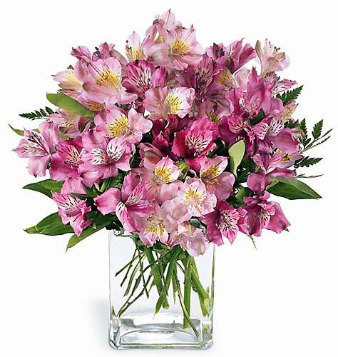

|

|
Astromelias: Alstroemeria, generalmente llamada «astromelia», «lirio del Perú» o «lirio de los Incas», es un género de Sudamérica con alrededor de 120 especies, principalmente de regiones frescas y montañosas en los Andes |
$ |
500.- |

| Tulipanes: Tulipa es un género de plantas perennes y bulbosas perteneciente a la familia Liliaceae, en el que se incluyen los populares tulipanes, nombre común con el que se designa a todas las especies, híbridos y cultivares de este género. |
$ |
600.- |

|
Girasoles: Helianthus annuus, también llamado comúnmente girasol, maravilla, mirasol, maíz de teja, acahual o flor de escudo, es una planta herbácea anual de la familia de las asteráceas originaria de Centro y Norteamérica y cultivada como alimenticia, oleaginosa y ornamental en todo el mundo. |
$ |
1000.- |